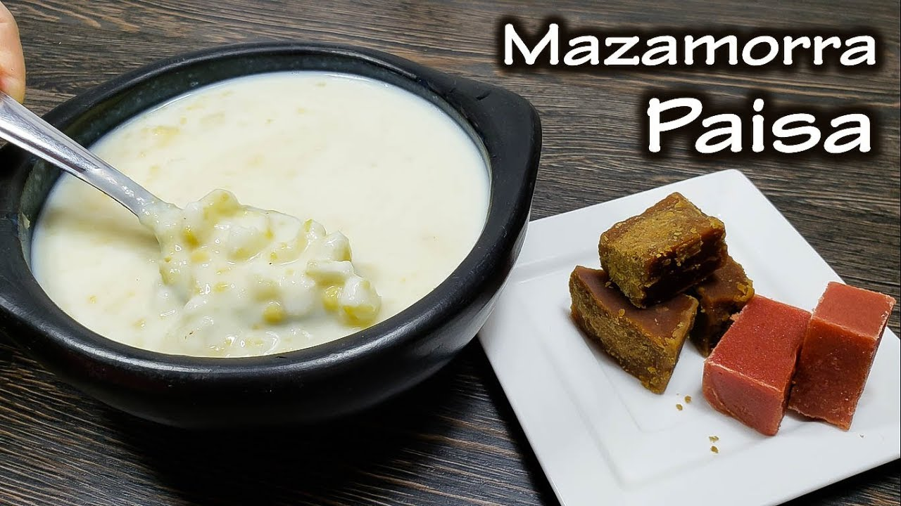

Mazamorra Paisa

Mazamorra is a traditional Latin American dish. Different iterations can be found throughout South America (and Spain), but the basic ingredients remain the same: Milk and maize.
This particular iteration comes from the northern part of Colombia, widely known as the Coffee Zone. Locally, people from this area, and their customs and culture are called "paisa".
This is a great dish for cold weather and fortunately, it can be found in various cities of Colombia.
This recipe was taken and translated from Rosita Cocina's YouTube channel.
Ingredients
- 1 pound threshed white maize
- 1 pound yellow maize
- 1 teaspoon baking soda
- water
- Guava paste or panela (optional)
Steps
- Soak the maize (both kinds, separately) overnight.
- Cook the white maize in a pressure cooker for 1 hour.
- Grind the yellow maize with a grain milling machine. At this stage, the maize should be ground into flakes.
- Wash the ground maize 3 times. Use a strainer to do this. Don't dispose of the water or the residue -- reuse it. We're trying to get corn starch so we can thicken our mazamorra later on.
- Wash the maize flakes until they're clean, then grind again. Adjust the milling machine so this time the maize is finely ground.
- Cook the ground maize with 8 cups of water for 45 minutes.
- Add the water you used to wash the maize previously. Note that the water must NOT have any starch left over. Let it cook for 15 minutes.
- Add the white maize to the mix and let it cook for another 15 minutes.
- Add the baking soda.
- Add the corn starch.
- Let everything boil until the mazamorra thickens. Mix everything together with the help of a wooden spoon.
- If the mazamorra is too thick, you can add some boiling water. It's important that the water is hot when you add it!
- When you serve the mazamorra, fill half the bowl with the maize mixture, and add milk.
- You can sweeten this dish with some panela or guava paste, but if you cannot get any of these ingredients, brown sugar is a good substitute.
Back to main page